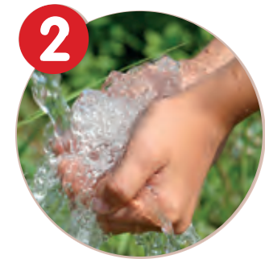
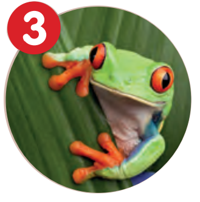
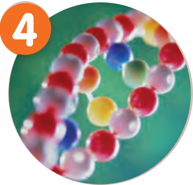

Week 1 2 Sept - 6 Sept
Week 2 9 Sept - 13 Sept
SEP
10
Tuesday, Lesson 1
Information Session
Science Laboratory
Teaching
- 1.3A Laboratory equipment and appartus
- 1.3B (1) Laboratory Safety Rules
- 1.3B (4) Accidents Handling
Homework
Textbook P.31SEP
13
Friday, Lesson 2
Learning Science in English
Chapter 1
Introducing Science
Week 3 16 Sept - 20 Sept
SEP
17
Tuesday, Lesson 3
What is Science?
Pre-Lab/Lesson Task
Fill in Textbook P.24-28Teaching
- 1.1 Learning about Science
- 1.3B (2) Hazard Warning Label
- 1.3B (3) Fire
Practical Work
- Practical 1.1
(Demonstration): Putting out a fire
Dictation
Dictation 1 (P.24-25, P.31-32: Laboratory Equipment and Safety Rules)SEP
20
Friday, Lesson 4
Basic Practical Skills
Pre-Lab/Lesson Task
Pre-LabTeaching
- 1.4A Measurement and Recording
- 1.4C Heating
Practical Work (Bunsen burner Session 1)
- Practical 1.2: Measuring length
- Practical 1.3: Measuring volume
- Practical 1.4: Measuring mass
- Practical 1.5 (a, b): Measuring temperature of tap water and ice water
-
Practical 1.6: Measuring time - Practical 1.9: Using a Bunsen burner
- Practical 1.11 (III): Heating solid in boiling tube with a Bunsen burner
- Measuring time (Alternative activity for measuring time)
Homework
Week 4 23 Sept - 27 Sept
SEP
24
Tuesday, Lesson 5
Basic Practical Skills
Pre-Lab/Lesson Task
Read TextbookTeaching
- 1.4B Transfering and Mixing Solutions
- 1.4C Comparing different Bunsen flame
Practical Work (Bunsen burner Session 2)
- Practical 1.7: Transfering solutions
- Practical 1.8: Mixing solutions
- Practical 1.10 (Demonstration): Studying a non-luminous flame
- Practical 1.11 (III): Heating solid in boiling tube with a Bunsen burner
- Practical 1.11 (I): Heating liquid in boiling tube with Bunsen burner
- Practical 1.5 (c): Measuring temperature of hot water
- Measuring time (Alternative activity for measuring time)
Homework
Dictation
Dictation 2 (P.33-36: Hazard Warning labels and Fire)SEP
27
Friday, Lesson 6
Practice of Science
Pre-Lab/Lesson Task
Read TextbookTeaching
- 1.2 Scientific investigations
- 1.3 Sectional Diagrams
Practical Work (Bunsen burner Session 3)
- Activity 1.2: Be a smart observer - Vitamin C tablets
- Practical 1.11 (II): Heating liquid in beaker with a Bunsen burner(with extra scientific investigation worksheet)
Homework
Dictation
Dictation 3 (P.44, 56-59, 67: Measurement and Bunsen burner)

Chapter 2
Water
Week 5 30 Sept - 4 Oct
OCT
4
Friday, Lesson 7
Change in states of water
Pre-Lab/Lesson Task
Read TextbookTeaching
- 2.1A Melting and boiling
- 2.1B Freezing
- 2.1C Condensation
- 2.2 Water Cycle
Practical Work (Bunsen burner Session 4)
- Practical 2.1: Heating ice to steam
- Practical 2.2 (Demonstartion): Cooling steam to water
Homework
Dictation
Dictation 4 (P.27-30: Laboratory Apparatus)Week 6 7 Oct - 11 Oct
OCT
8
Tuesday, Lesson 8
Water Cycle
Pre-Lab/Lesson Task
Read TextbookTeaching
- 1.2B Revisit of Fair Test Concept
- 2.1D Evaporation
- 2.2 Water Cycle
Practical Work
- Practical 2.2 (Demonstartion): Cooling steam to water
- Practical 2.4: How rain is formed (during the quiz, demonstration)
Homework
Quiz
Quiz 1 (Section 1.3-1.4)OCT
11
Friday, Lesson 9
Dissolving
Pre-Lab/Lesson Task
Read TextbookTeaching
- 1.2B Revisit of Fair Test Concept
- 2.2 Water Cycle
- 2.3 Dissolving
Practical Work
- Practical 2.3 (I, III, IV): Factors affecting the evaporation
- Practical 2.5: Soluble or insoluble? (Consider demonstration)
Homework
Dictation
Dictation 5 (P.4, 15-20: Science, Science Investigation, Fair tests and Variables)Week 7 14 Oct - 18 Oct
OCT
15
Tuesday, Lesson 10
Rate of Dissolving and Solubility
Pre-Lab/Lesson Task
Read TextbookTeaching
- 2.3C Rate of Dissolving
- 2.3D Solubility (Extension)
Practical Work
- Practical 2.6: Factors affecting the rate of dissolving
- Practical 2.7: How much solute can water dissolve?
- Practical 2.8: Solubility of sodium sulphate at different temperatures (Consider cancel)
Homework
Dictation
Dictation 5 (P.4, 15-20: Science, Science Investigation, Fair tests and Variables)OCT
18
Friday, Lesson 11
Water Purification
Pre-Lab/Lesson Task
Read TextbookTeaching
- 2.4 Water purification
Practical Work (Bunsen burner Session 5)
- Practical 2.10: Purifying water by sedimentation
- Practical 2.11: Purifying water by filtration
- Practical 2.12 (II): Examining filtered muddy water
Homework
Quiz
Quiz 2 (Section 1.1-1.2)Week 8 21 Oct - 25 Oct
OCT
22
Tuesday, Lesson 12
Distillation and Further treatment
Pre-Lab/Lesson Task
Read TextbookTeaching
- 2.4B(3) Distillation
- 2.5 Further treatment of drinking water
Practical Work
- Practical 2.13 (Demonstration): Distillation
- Practical 2.14 (Demonstration): Killing microorganisms in water using chlorine bleach
Homework
Dictation
Dictation 6 (P.73, 76, 78-82, 89: Change in states of water)OCT
25
Friday, Lesson 13
Water Purification
Pre-Lab/Lesson Task
Read TextbookTeaching
- 2.6 Water conservation
Homework
Dictation
Dictation 7 (P.90-96, 100: Water cycle and Dissolving)

Chapter 3
Looking at living things
Week 9 28 Oct - 1 Nov
OCT
29
Tuesday, Lesson 14
Living things
Pre-Lab/Lesson Task
Read TextbookTeaching
- 3.1 Living Things
Homework
NOV
1
Friday, Lesson 15
Grouping of living things
Pre-Lab/Lesson Task
Read TextbookTeaching
- 3.2 Grouping of living things
Practical Work
- Practical 3.1: Vascular tissues in celery
Homework
Week 10 4 Nov - 8 Nov
NOV
5
Tuesday, Lesson 16
Identification Key
Pre-Lab/Lesson Task
Read TextbookTeaching
- 3.2C Identification Key
Homework
NOV
8
Friday, Lesson 17
Biodiversity
Pre-Lab/Lesson Task
Read TextbookTeaching
- 3.3 Biodiversity
Homework
Week 11 11 Nov - 15 Nov
NOV
11
Monday, during lunch break
1st Term Uniform Test
Syllabus
- To be confirmed
NOV
12
Tuesday, Lesson 18
Checking of Uniform Test
Revision
Pre-Lab/Lesson Task
TBCTeaching
- TBC
Practical Work
- TBC
Homework
Dictation
Dictation 8 (P.106-114,117-119: Water purification)NOV
15
Friday, Lesson 19
Revision
Pre-Lab/Lesson Task
TBCTeaching
- TBC
Practical Work
- TBC
Homework
Quiz
Quiz 3 (Section 2.1-2.3)Week 12 18 Nov - 22 Nov
NOV
19
Tuesday, Lesson 20
Revision
Pre-Lab/Lesson Task
TBCTeaching
- TBC
Practical Work
- TBC
Homework
Dictation
Dictation 9 (P.120-125: Further treatment of drinking water)NOV
22
Friday, Lesson 21
Revision
Pre-Lab/Lesson Task
TBCTeaching
- TBC
Practical Work
- TBC
Homework
Quiz
Quiz 4 (Section 2.4-2.5)Week 13 25 Nov - 29 Nov
NOV
28
Thursday, Lesson 22 Change to Tuesday Timetable
Revision
Pre-Lab/Lesson Task
TBCTeaching
- TBC
Practical Work
- TBC
Homework

Chapter 4 Cells, human reproduction
Cells, human reproduction
and heredity

Chapter 5
Energy
Chapter 6